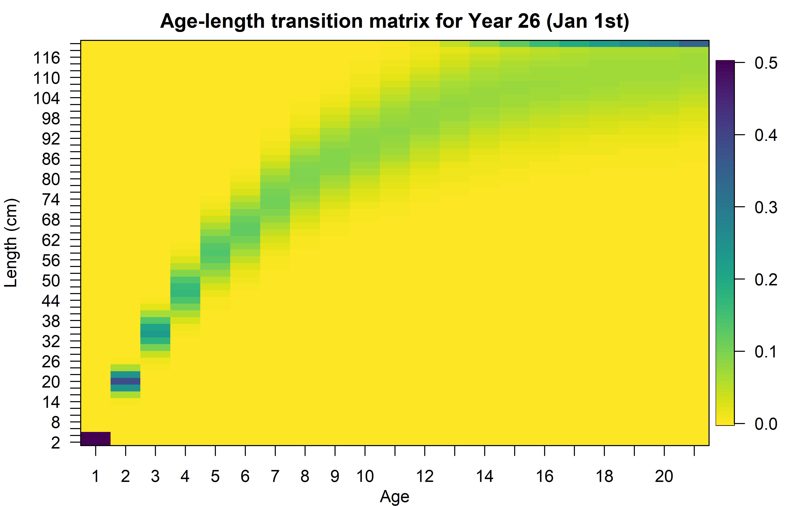

Modelos avanzados en evaluación de recursos pesqueros: Día 4
Dr. Giancarlo M. Correa
Cousteau Consultant Group
WHAM: Crecimiento somático
Enfoques
Talla media a la edad (LAA)
1. LAA paramétrico
Para \(y=1\) al inicio del año Correa et al. (2023):
\[ \tilde{L}_{y,a} = \begin{cases} L'_{min} + ba,\hspace{6cm}a\leq \tilde{a}\\ (L_\infty^\gamma + (L_\tilde{a}^\gamma-L_\infty^\gamma)exp(-k(a-\tilde{a})))^{1/\gamma}\hspace{1cm}a>\tilde{a} \end{cases} \]
Donde \(L'_{min}\) es el límite inferior de la marca de clase menor, \(\tilde{a}\) es una edad de referencia, \(L_\infty\) es la talla asintótica, \(k\) es la tasa de crecimiento, \(\gamma\) es el parámetro de forma. Además, \(b=(L_\tilde{a} - L'_{min})/\tilde{a}\).
1. LAA paramétrico
Para \(y>1\):
\[ \tilde{L}_{y,a} = \begin{cases} L'_{min} + ba,\hspace{7cm}a\leq \tilde{a}\\ (\tilde{L}_{y-1,a-1}^\gamma + (\tilde{L}_{y-1,a-1}^\gamma-L_\infty^\gamma)(exp(-k)-1))^{1/\gamma}\hspace{0.5cm}a>\tilde{a} \end{cases} \]
Cuando \(\gamma = 1\), entonces la ecuación es de Von Bertalanffy (Schnute 1981).
1. LAA paramétrico
Para cualquier fracción \(\theta\) del año:
\[\tilde{L}_{y,a+\theta}=(\tilde{L}_{y-1,a-1}^\gamma + (\tilde{L}^\gamma_{y-1,a-1})(exp(-k\theta)-1))^{1/\gamma}\]
Esto es importante dado que los peces también crecen dentro de un año.
1. LAA paramétrico
Podemos predecir desviaciones sobre los parámetros de crecimiento base para modelar variabilidad temporal:
\[log(P_t) = \mu_P + \delta_{P,t}\]
Donde \(P\) representa alguno de los parámetros de crecimiento, y \(t\) representa años o cohortes.
Al igual que en otros componentes, las desviaciones \(\delta_{P,t}\) pueden ser independientes o correlacionadas en el tiempo.
2. LAA no paramétrico
Comenzamos con un vector de talla media a la edad al inicio del año \(\tilde{L}_{a}\) (parámetros), que serán tratados como efectos fijos. Como vemos, no hay necesidad de usar una función clásica paramétrica. Si no se modela variabilidad temporal, entonces \(\tilde{L}_{a,y}=\tilde{L}_{a}\) para todo \(y\).
La talla media a cualquier fracción del año se calcula como una interpolación lineal entre \(\tilde{L}_{a,y}\) y \(\tilde{L}_{a+1,y+1}\).
2. LAA no paramétrico
Para modelar variabilidad temporal, podemos predecir desviaciones:
\[\tilde{L}_{a,y} = \mu_{\tilde{L}_{a}} + \delta_{a,y}\]
Donde las desviaciones \(\delta_{a,y}\) pueden ser independientes o correlacionadas por edad y año.
3. LAA Semi-paramétrico
Es una combinación de ambos enfoques. Lo podemos dividir en los siguientes pasos:
Calcula la talla media al inicio del año utilizando el enfoque paramétrico.
Predecir desviaciones con alguna estructura presentada en el enfoque no paramétrico.
Calcular talla media en cualquier momento del año mediante interpolación lineal.
Comparación de enfoques
Matriz de transición
Distribuye la información de cada edad entre las diferentes marcas de clase modeladas.
\[\varphi_{y,l,a}=\begin{cases} \Phi(\frac{L'_{min^\ast} - L_{y,a}}{\sigma_{y,a}})\hspace{3.2cm}l=1\\ \Phi(\frac{L'_{l+1} - L_{y,a}}{\sigma_{y,a}})-\Phi(\frac{L'_{l} - L_{y,a}}{\sigma_{y,a}})\hspace{1cm}1<l<n_L\\ 1-\Phi(\frac{L'_{max} - L_{y,a}}{\sigma_{y,a}})\hspace{2.5cm}l=n_L \end{cases}\]
\(\Phi\) es la distribución normal estándar acumulada, \(L'_{min^\ast}\) es la primera marca de clase, \(l\) es indicador de marca de clase, \(n_L\) es el número de marcas de clase, y \(\sigma_{y,a}\) es la SD de tallas a edad \(a\).
Matriz de transición
\(\sigma_{y,a}\) es calculado a partir de dos parámetros (efecto fijo para cualquier enfoque): \(\sigma_{\tilde{a}}\) y \(\sigma_{A}\):
\[\sigma_{y,a}=\sigma_{\tilde{a}}+(\frac{\sigma_{A}-\sigma_{\tilde{a}}}{L_{\infty}-L_{\tilde{a}}})(\tilde{L}_{y,a}-L_{\tilde{a}})\]
Para el enfoque no paramétrico, usamos \(L_A\) en vez de \(L_{\infty}\) y \(L_1\) en vez de \(L_{\tilde{a}}\).
Matriz de transición
Peso medio a la edad (WAA)
1. WAA paramétrico
Cuando modelamos tallas en la población, podemos usar la relación talla-peso:
\[W_{L_l} = \Omega_1 {L_l}^{\Omega_2}\]
Donde \(\Omega_1\) y \(\Omega_2\) son estimados como efectos fijos.
También podemos modelar variabilidad temporal en estos parámetros, con las mismas estructuras descritas para los parámetros de crecimiento (LAA paramétrico).
1. WAA paramétrico
Luego, para calcular el peso medio a la edad:
\[W_{y,a}=\sum_l \varphi_{y,l,a}W_{L_l}\]
2. WAA no paramétrico
Es el mismo enfoque descrito para LAA no paramétrico.
Se tiene un vector de peso media a la edad al inicio del año \(\tilde{W}_{a}\) (parámetros), que serán tratados como efectos fijos. Si no se modela variabilidad temporal, entonces \(\tilde{W}_{a,y}=\tilde{W}_{a}\) para todo \(y\).
El peso medio a cualquier fracción del año se calcula como:
\[\tilde{W}_{y,a+\theta} = \tilde{W}_{y,a}(G_{y,a})^\theta\]
Donde \(G_{y,a} = \tilde{W}_{y+1,a+1}/\tilde{W}_{y,a}\).
2. WAA no paramétrico
Para modelar variabilidad temporal, podemos predecir desviaciones:
\[\tilde{W}_{a,y} = \mu_{\tilde{W}_{a}} + \delta_{a,y}\]
Donde las desviaciones \(\delta_{a,y}\) pueden ser independientes o correlacionadas por edad y año.
Enfoques
Definición en R
Definición en R
my_input = wham::prepare_wham_input(model_name = "Example_1",
basic_info = input_data,
NAA_re = list(), # NAA parameters
M = list(), # M parameter
selectivity = list(), # Selectivity parameter
catchability = list(), # Catchability parameter
ecov = list(), # Environmental information
# Crecimiento somatico:
growth = list(), LAA = list(), # Mean length-at-age
LW = list(), WAA = list(), # Mean weight-at-age
age_comp = "multinomial", # Age composition model
len_comp = "multinomial" # Length composition model
) Definición en R
Enfoquemos solo la parte de crecimiento somático. Se pueden incluir los siguientes argumentos:
my_input = wham::prepare_wham_input(...,
growth = list(model = ..., re = ...,
init_vals = ..., est_pars = ...,
SD_vals = ..., SD_est = ...),
LAA = list(re = ...,
LAA_vals = ..., est_pars = ...,
SD_vals = ..., SD_est = ...),
LW = list(re = ..., init_vals = ...,
est_pars = ...),
WAA = list(re = ..., WAA_vals = ...,
est_pars = ...),
...) LAA paramétrico
Corresponde a argumento growth.
model: (character) modelo paramétrico a utilizarvB_classic: Ecuación von Bertalanffy (asume \(\gamma = 1\)).Richards: Ecuación Richards (incluye \(\gamma = 1\)).
init_vals: (vector numeric) valores iniciales para parámetros \(k\), \(L_\infty\), \(L_{\tilde{a}}\) (para von Bertalanffy), y además \(\gamma\) (para Richards).
LAA paramétrico
Corresponde a argumento growth.
est_pars: (vector integer) vector que indica la posición del parámetro a estimar (e.g.,c(1,3)indica que estimará \(k\) y \(L_{\tilde{a}}\)).
SD_vals: (vector numeric) valores iniciales para parámetros \(\sigma_{\tilde{a}}\) y \(\sigma_{A}\).SD_est: (vector integer) vector que indica la posición del parámetro a estimar.
LAA paramétrico
Corresponde a argumento growth.
re: (vector character) estructura de desviaciones. Longitud igual al número de parámetros.none: no incluir desviacionesiid_y: independientes por añoiid_c: independientes por cohortesar1_y: correlacionadas por añoar1_c: correlacionadas por cohorte
LAA no paramétrico
Corresponde a argumento LAA.
re: (character) estructura de desviacionesnone: no incluir desviacionesiid: independientes2dar1: correlacionadas por año y edad
LAA_vals: (vector numeric) valores iniciales para parámetros talla media a la edad.
LAA no paramétrico
Corresponde a argumento LAA.
est_pars: (vector integer) vector que indica la posición del parámetro a estimar.
SD_vals: (vector numeric) valores iniciales para parámetros \(\sigma_{\tilde{a}}\) y \(\sigma_{A}\).SD_est: (vector integer) vector que indica la posición del parámetro a estimar.
LAA semi-paramétrico
Especificamos tanto growth como LAA. Del argumento LAA solo se tomará información de re, lo demás no es necesario. No especificar re en el argumento growth.
WAA paramétrico
Corresponde a argumento LW.
init_vals: (vector numeric) valores iniciales para parámetros \(\Omega_1\) y \(\Omega_2\).
est_pars: (vector integer) vector que indica la posición del parámetro a estimar.
WAA paramétrico
Corresponde a argumento LW.
re: (vector character) estructura de desviaciones. Longitud igual a 2.none: no incluir desviacionesiid_y: independientes por añoiid_c: independientes por cohortesar1_y: correlacionadas por añoar1_c: correlacionadas por cohorte
WAA no paramétrico
Corresponde a argumento WAA.
re: (character) estructura de desviacionesnone: no incluir desviacionesiid: independientes2dar1: correlacionadas por año y edad
WAA_vals: (vector numeric) valores iniciales para parámetros peso media a la edad.
est_pars: (vector integer) vector que indica la posición del parámetro a estimar.
Definición en R
Importante
- No todos los argumentos del componente crecimiento somático son necesarios.
- Para el uso de cierto enfoque para LAA o WAA, tendremos que especificar el argumento correspondiente.
Definición en R
Cambios en datos de entrada
El método estándar es incluir empirical weight-at-age (
input_data$waa), el cual asume que no tiene error de observación. Recuerda que esto ignora los datos de tallas (en caso la tengamos) para calcular SSB.En caso no tener empirical weight-at-age, se puede estimar usando los diferentes métodos. Para esto, no es necesario especificar
input_data$waa, pero los WAA pointers si son necesarios.Si se desea usar
input_data$waacomo observaciones con un error asociado, también se debe incluirinput_data$waa_cv(con las mismas dimensiones).También podemos modificar \(\tilde{a}\) (edad de referencia, por defecto es 1). Para eso, especificar
input_data$age_L1(numeric).
WHAM: Selectividad
Funciones de selectividad
Tenemos las siguientes opciones:
- Específico a la edad
- Logística a la edad
- Logística doble a la edad
- Logística decreciente a la edad
- Doble normal a la edad
- Logística a la talla
- Logística decreciente a la talla
- Doble normal a la talla
Selectividad a la edad
Específico a la edad
Se estima un parámetro para cada edad (valores entre 0 y 1).
Logística a la edad
Dos parámetros \(\beta_1\) y \(\beta_2\) (ambos mayores a 0), se calcula usando:
\[S_a = \frac{1}{1+exp(-(a-\beta_1)/\beta_2)}\]
Selectividad a la edad
Logística decreciente a la edad
Dos parámetros \(\beta_3\) y \(\beta_4\) (ambos mayores a 0), se calcula usando:
\[S_a = \frac{1}{1+exp((a-\beta_3)/\beta_4)}\]
Logística doble a la edad
Es una combinación de logística y logística decreciente. Tiene 4 parámetros (\(\beta_1\), \(\beta_2\), \(\beta_3\), \(\beta_4\)), y resulta en una forma acampanada.
Selectividad a la edad
Doble normal a la edad
Tiene 6 parámetros. Basada en la parametrización implementada en Stock Synthesis. Tiene forma acampanada.
- par1: edad inicio meseta
- par2: ancho de meseta
- par3: ancho subida hacia meseta
- par4: ancho de bajada desde meseta
- par5: selectividad inicial
- par6: selectividad final
Desviaciones
Al igual que otros componentes, también podemos predecir desviaciones (\(\zeta\)). Estas desviaciones pueden estar correlacionadas en el tiempo y entre parámetros Stock and Miller (2021):
\[Cov(\zeta_{1,y},\zeta_{2,\tilde{y}})=\frac{\sigma^2_s \phi_{par}\phi_{year}^{\vert y-\tilde{y} \vert }}{(1-\phi_{par}^2)(1-\phi_{year}^2)}\]
Donde \(\sigma^2_s\) es la AR1 varianza, \(\phi_{par}\) y \(\phi_{year}\) los parámetros de correlación.
Ejemplo
Definición en R
my_input = wham::prepare_wham_input(model_name = "Example_1",
basic_info = input_data,
NAA_re = list(), # NAA parameters
M = list(), # M parameter
selectivity = list(), # Selectivity parameter
catchability = list(), # Catchability parameter
ecov = list(), # Environmental information
# Crecimiento somatico:
growth = list(), LAA = list(), # Mean length-at-age
LW = list(), WAA = list(), # Mean weight-at-age
age_comp = "multinomial", # Age composition model
len_comp = "multinomial" # Length composition model
) Definición en R
Enfoquemos solo la parte de crecimiento somático. Se pueden incluir los siguientes argumentos:
Definición en R
model: (character vector) nombre de modelos a usar. Longitud igual al número de bloques o funciones de selectividad diferente. No necesariamente debe ser igual al número de pesquerías e índices.
age-specificlogistic(age)double-logistic(age)decreasing-logistic(age)
double-normal(age)len-logistic(tallas)len-decreasing-logistic(tallas)len-double-normal(tallas)
Definición en R
re: (character vector) estructura de desviaciones. Longitud igual al número de bloques.
none: no desviacionesiid: parámetros varían en el tiempo pero independientesar1: correlacionados entre parámetros, pero constante en tiempoar1_y: correlacionados en el tiempo, pero no entre parámetros2dar1: correlacionado en el tiempo y entre parámetros
Definición en R
initial_pars: (list) longitud igual al número de bloques. Cada slot contiene un vector (numeric) con los valores iniciales de parámetros.
fix_pars: (list) longitud igual al número de bloques. Cada slot contiene un vector (numeric) con la posición del parámetro a fijar. Si se estiman todos los parámetros para cierto bloque, especificar NULL.
n_selblocks: (integer) número de bloques de selectividad
Definición en R
Cambios en datos de entrada
Es justamente donde
input_data$selblock_pointer_fleetsyinput_data$selblock_pointer_indicestoman importancia. Estos pointers se refiere a los bloques que usarán las pesquerías y los índices.Los pointers pueden cambiar en el tiempo.
La aplicabilidad es similar a la de mirror en Stock Synthesis (e.g., CPUE y pesquerías).
Laboratorio
Actividades
Continuar con la implementación del objeto de datos para el caso 1.
Correr modelo para caso 1.
Implementación del objeto de datos para el caso 2.
Asumir \(M=0.35\) y \(Q=1\). Además, \(\bar{R} = 100000\).
Referencias

Correa, Giancarlo M, Cole C Monnahan, Jane Y Sullivan, James T Thorson, and André E Punt. 2023. “Modelling Time-Varying Growth in State-Space Stock Assessments.” Edited by Pamela Woods. ICES Journal of Marine Science, August. https://doi.org/10.1093/icesjms/fsad133.
RICHARDS, F. J. 1959. “A Flexible Growth Function for Empirical Use.” Journal of Experimental Botany 10 (2): 290–301. https://doi.org/10.1093/jxb/10.2.290.
Schnute, Jon. 1981. “A Versatile Growth Model with Statistically Stable Parameters.” Canadian Journal of Fisheries and Aquatic Sciences 38 (9): 1128–40. https://doi.org/10.1139/f81-153.
Stock, Brian C., and Timothy J. Miller. 2021. “The Woods Hole Assessment Model (WHAM): A General State-Space Assessment Framework That Incorporates Time- and Age-Varying Processes via Random Effects and Links to Environmental Covariates.” Fisheries Research 240 (August): 105967. https://doi.org/10.1016/j.fishres.2021.105967.
Xu, Haikun, James T. Thorson, Richard D. Methot, and Ian G. Taylor. 2019. “A New Semi-Parametric Method for Autocorrelated Age- and Time-Varying Selectivity in Age-Structured Assessment Models.” Canadian Journal of Fisheries and Aquatic Sciences 76 (2): 268–85. https://doi.org/10.1139/cjfas-2017-0446.